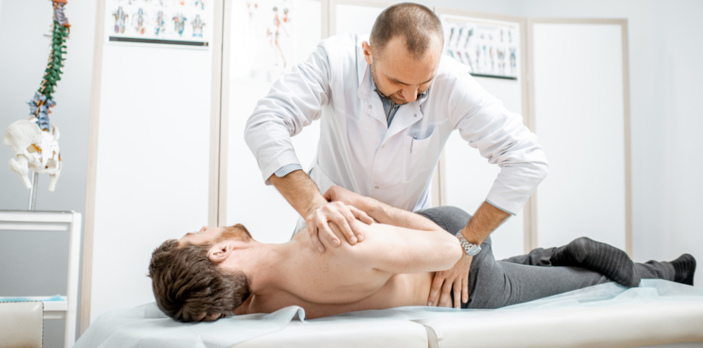

OSTEOPATHY
1. What is Osteopathy?
Osteopathy takes a holistic, whole-body approach to healthcare. It uses manual ‘hands-on’ techniques to improve circulation and correct altered biomechanics, without the use of drugs. An osteopathic physician does not concentrate only on the problem area, but uses manual techniques to balance all the body systems, and to provide overall good health and wellbeing. Diagnosing and treating conditions using these techniques is called Osteopathic Manipulative Medicine (OMM). Techniques include stretching, gentle pressure, and resistance, known as osteopathic manipulative medicine.

An osteopathic physician may also issue prescription medicine and use surgical methods to support the holistic, manual treatment. Many osteopathic physicians also serve as primary care physicians in fields such as family medicine, internal medicine, and pediatrics.

2. What does Osteopathy treat?

-
Osteopathy and Newborns:
Flat head syndrome, Sleep disorder, Colic pain, Chronic otitis, Congenital torticollis. Reflux.
-
Osteopathy and Teenagers:
Back pain, Micro-traumatic lesions, Focusing issues, Sleep disorder, Chronic otitis, sinusitis, Colic pain, Coccydynia, Stress, Muscle pain, Joint pain, Neck pain, Jaw pain, Headaches/Migraines, Digestion issues, Urological issues, Sciatica, Heart burn, Whiplash injury, Scar tissuework, Post-surgery recovery, Premenstrual syndrome, Premenstrual syndrome, Difficulties to breath.
-
Osteopathy and Pregnancy:
Infertility, Headaches, Back pain, Sciatica, Heavy legs. Heart burn, Carpal tunel syndrome, Preparation for delivery, Post-partum check up, Plantar fasciitis, Difficulties to breath, Coccydynia, Rib pain.
-
Osteopathy and Atheletes:
Preparation, Recovery, Trauma, microtrauma, Sprains, Tendinosis, Nevralgia, Muscle pain/stiffness, Tears, Chronic pain.
-
Osteopathy and The elderly:
Reduce symptoms from known disease, Joint, Muscle pain, Chronic pain, Digestion disorder, Urological issues, Difficulties to sleep.
3. Benefits
-
Oseopathy and back pain
Many people approach an osteopathic physician with back pain, but preventive treatment is also possible. Today’s increasingly sedentary lifestyle means that the average American will spend over 10.5 hours per day in front of a screen. This can lead to poor posture and musculoskeletal problems. Treatment involves gentle and subtle manipulation, especially of the muscles and soft tissues. The doctor may stretch or massage the muscle. If there are signs of a displaced disk or other serious condition, the osteopathic physician may recommend doing some imaging tests and direct the patient toward conventional treatment. An osteopathic physician can help prevent problems by pinpointing potential sources of referred pain in good time.

-
Osteopathy and sleep
Osteopathy can help a person sleep when chronic pain has been causing insomnia. Pain and discomfort can lead to a lack of sleep or restless nights. This can make it harder for the body to function adequately and reduce the ability to cope with pain. Osteopathy has been shown to reduce sleeplessness and insomnia resulting from chronic pain. Studies have shown that osteopathic treatment can reduce sleep apnea in infants under 4 months old, but further research is needed to confirm this.
At Zara Therapy Clinic, we only employ osteopathic who have received a qualifed Doctor of Orthopedics degree. Your health is our priority and we use the best methods to treat it. If there are signs that are not good about your health. Visit our therapy clinic for more advice.